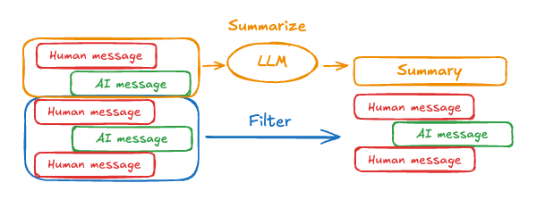
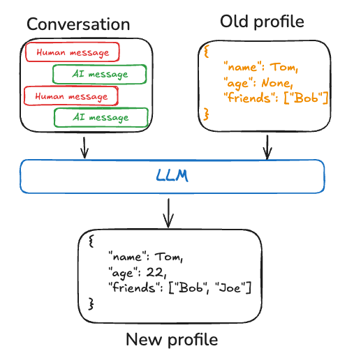
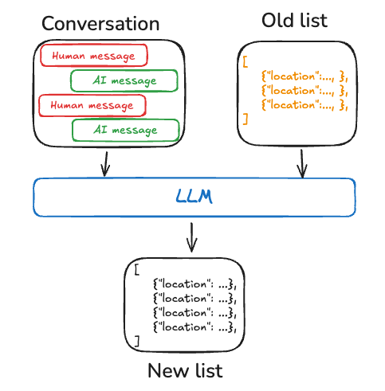
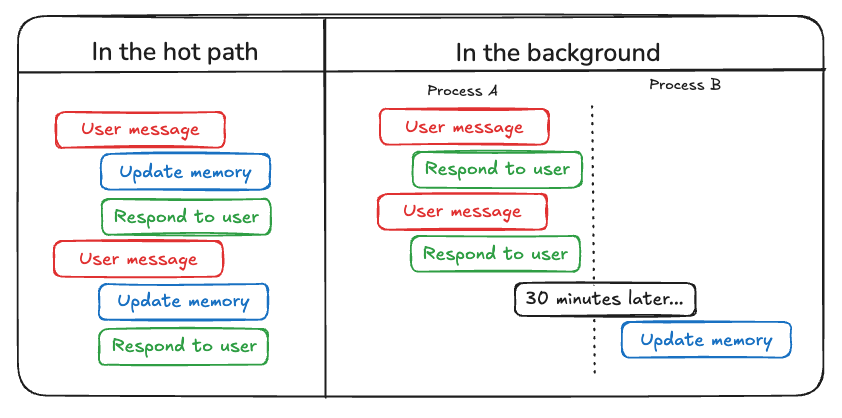

Memory¶
What is Memory?¶
Memory is a cognitive function that allows people to store, retrieve, and use information to understand their present and future. Consider the frustration of working with a colleague who forgets everything you tell them, requiring constant repetition! As AI agents undertake more complex tasks involving numerous user interactions, equipping them with memory becomes equally crucial for efficiency and user satisfaction. With memory, agents can learn from feedback and adapt to users' preferences. This guide covers two types of memory based on recall scope:
Short-term memory, or thread-scoped memory, can be recalled at any time from within a single conversational thread with a user. LangGraph manages short-term memory as a part of your agent's state. State is persisted to a database using a checkpointer so the thread can be resumed at any time. Short-term memory updates when the graph is invoked or a step is completed, and the State is read at the start of each step.
Long-term memory is shared across conversational threads. It can be recalled at any time and in any thread. Memories are scoped to any custom namespace, not just within a single thread ID. LangGraph provides stores (reference doc) to let you save and recall long-term memories.
Both are important to understand and implement for your application.

Short-term memory¶
Short-term memory lets your application remember previous interactions within a single thread or conversation. A thread organizes multiple interactions in a session, similar to the way email groups messages in a single conversation.
LangGraph manages short-term memory as part of the agent's state, persisted via thread-scoped checkpoints. This state can normally include the conversation history along with other stateful data, such as uploaded files, retrieved documents, or generated artifacts. By storing these in the graph's state, the bot can access the full context for a given conversation while maintaining separation between different threads.
Since conversation history is the most common form of representing short-term memory, in the next section, we will cover techniques for managing conversation history when the list of messages becomes long. If you want to stick to the high-level concepts, continue on to the long-term memory section.
Managing long conversation history¶
Long conversations pose a challenge to today's LLMs. The full history may not even fit inside an LLM's context window, resulting in an irrecoverable error. Even if your LLM technically supports the full context length, most LLMs still perform poorly over long contexts. They get "distracted" by stale or off-topic content, all while suffering from slower response times and higher costs.
Managing short-term memory is an exercise of balancing precision & recall with your application's other performance requirements (latency & cost). As always, it's important to think critically about how you represent information for your LLM and to look at your data. We cover a few common techniques for managing message lists below and hope to provide sufficient context for you to pick the best tradeoffs for your application:
- Editing message lists: How to think about trimming and filtering a list of messages before passing to language model.
- Summarizing past conversations: A common technique to use when you don't just want to filter the list of messages.
Editing message lists¶
Chat models accept context using messages, which include developer provided instructions (a system message) and user inputs (human messages). In chat applications, messages alternate between human inputs and model responses, resulting in a list of messages that grows longer over time. Because context windows are limited and token-rich message lists can be costly, many applications can benefit from using techniques to manually remove or forget stale information.

The most direct approach is to remove old messages from a list (similar to a least-recently used cache).
The typical technique for deleting content from a list in LangGraph is to return an update from a node telling the system to delete some portion of the list. You get to define what this update looks like, but a common approach would be to let you return an object or dictionary specifying which values to retain.
def manage_list(existing: list, updates: Union[list, dict]):
if isinstance(updates, list):
# Normal case, add to the history
return existing + updates
elif isinstance(updates, dict) and updates["type"] == "keep":
# You get to decide what this looks like.
# For example, you could simplify and just accept a string "DELETE"
# and clear the entire list.
return existing[updates["from"]:updates["to"]]
# etc. We define how to interpret updates
class State(TypedDict):
my_list: Annotated[list, manage_list]
def my_node(state: State):
return {
# We return an update for the field "my_list" saying to
# keep only values from index -5 to the end (deleting the rest)
"my_list": {"type": "keep", "from": -5, "to": None}
}
LangGraph will call the manage_list "reducer" function any time an update is returned under the key "my_list". Within that function, we define what types of updates to accept. Typically, messages will be added to the existing list (the conversation will grow); however, we've also added support to accept a dictionary that lets you "keep" certain parts of the state. This lets you programmatically drop old message context.
Another common approach is to let you return a list of "remove" objects that specify the IDs of all messages to delete. If you're using the LangChain messages and the add_messages reducer (or MessagesState, which uses the same underlying functionality) in LangGraph, you can do this using a RemoveMessage.
from langchain_core.messages import RemoveMessage, AIMessage
from langgraph.graph import add_messages
# ... other imports
class State(TypedDict):
# add_messages will default to upserting messages by ID to the existing list
# if a RemoveMessage is returned, it will delete the message in the list by ID
messages: Annotated[list, add_messages]
def my_node_1(state: State):
# Add an AI message to the `messages` list in the state
return {"messages": [AIMessage(content="Hi")]}
def my_node_2(state: State):
# Delete all but the last 2 messages from the `messages` list in the state
delete_messages = [RemoveMessage(id=m.id) for m in state['messages'][:-2]]
return {"messages": delete_messages}
API Reference: RemoveMessage | AIMessage | add_messages
In the example above, the add_messages reducer allows us to append new messages to the messages state key as shown in my_node_1. When it sees a RemoveMessage, it will delete the message with that ID from the list (and the RemoveMessage will then be discarded). For more information on LangChain-specific message handling, check out this how-to on using RemoveMessage .
See this how-to guide and module 2 from our LangChain Academy course for example usage.
Summarizing past conversations¶
The problem with trimming or removing messages, as shown above, is that we may lose information from culling of the message queue. Because of this, some applications benefit from a more sophisticated approach of summarizing the message history using a chat model.

Simple prompting and orchestration logic can be used to achieve this. As an example, in LangGraph we can extend the MessagesState to include a summary key.
Then, we can generate a summary of the chat history, using any existing summary as context for the next summary. This summarize_conversation node can be called after some number of messages have accumulated in the messages state key.
def summarize_conversation(state: State):
# First, we get any existing summary
summary = state.get("summary", "")
# Create our summarization prompt
if summary:
# A summary already exists
summary_message = (
f"This is a summary of the conversation to date: {summary}\n\n"
"Extend the summary by taking into account the new messages above:"
)
else:
summary_message = "Create a summary of the conversation above:"
# Add prompt to our history
messages = state["messages"] + [HumanMessage(content=summary_message)]
response = model.invoke(messages)
# Delete all but the 2 most recent messages
delete_messages = [RemoveMessage(id=m.id) for m in state["messages"][:-2]]
return {"summary": response.content, "messages": delete_messages}
See this how-to here and module 2 from our LangChain Academy course for example usage.
Knowing when to remove messages¶
Most LLMs have a maximum supported context window (denominated in tokens). A simple way to decide when to truncate messages is to count the tokens in the message history and truncate whenever it approaches that limit. Naive truncation is straightforward to implement on your own, though there are a few "gotchas". Some model APIs further restrict the sequence of message types (must start with human message, cannot have consecutive messages of the same type, etc.). If you're using LangChain, you can use the trim_messages utility and specify the number of tokens to keep from the list, as well as the strategy (e.g., keep the last max_tokens) to use for handling the boundary.
Below is an example.
from langchain_core.messages import trim_messages
trim_messages(
messages,
# Keep the last <= n_count tokens of the messages.
strategy="last",
# Remember to adjust based on your model
# or else pass a custom token_encoder
token_counter=ChatOpenAI(model="gpt-4"),
# Remember to adjust based on the desired conversation
# length
max_tokens=45,
# Most chat models expect that chat history starts with either:
# (1) a HumanMessage or
# (2) a SystemMessage followed by a HumanMessage
start_on="human",
# Most chat models expect that chat history ends with either:
# (1) a HumanMessage or
# (2) a ToolMessage
end_on=("human", "tool"),
# Usually, we want to keep the SystemMessage
# if it's present in the original history.
# The SystemMessage has special instructions for the model.
include_system=True,
)
API Reference: trim_messages
Long-term memory¶
Long-term memory in LangGraph allows systems to retain information across different conversations or sessions. Unlike short-term memory, which is thread-scoped, long-term memory is saved within custom "namespaces."
Storing memories¶
LangGraph stores long-term memories as JSON documents in a store (reference doc). Each memory is organized under a custom namespace (similar to a folder) and a distinct key (like a filename). Namespaces often include user or org IDs or other labels that makes it easier to organize information. This structure enables hierarchical organization of memories. Cross-namespace searching is then supported through content filters. See the example below for an example.
from langgraph.store.memory import InMemoryStore
def embed(texts: list[str]) -> list[list[float]]:
# Replace with an actual embedding function or LangChain embeddings object
return [[1.0, 2.0] * len(texts)]
# InMemoryStore saves data to an in-memory dictionary. Use a DB-backed store in production use.
store = InMemoryStore(index={"embed": embed, "dims": 2})
user_id = "my-user"
application_context = "chitchat"
namespace = (user_id, application_context)
store.put(
namespace,
"a-memory",
{
"rules": [
"User likes short, direct language",
"User only speaks English & python",
],
"my-key": "my-value",
},
)
# get the "memory" by ID
item = store.get(namespace, "a-memory")
# search for "memories" within this namespace, filtering on content equivalence, sorted by vector similarity
items = store.search(
namespace, filter={"my-key": "my-value"}, query="language preferences"
)
Framework for thinking about long-term memory¶
Long-term memory is a complex challenge without a one-size-fits-all solution. However, the following questions provide a structure framework to help you navigate the different techniques:
What is the type of memory?
Humans use memories to remember facts, experiences, and rules. AI agents can use memory in the same ways. For example, AI agents can use memory to remember specific facts about a user to accomplish a task. We expand on several types of memories in the section below.
When do you want to update memories?
Memory can be updated as part of an agent's application logic (e.g. "on the hot path"). In this case, the agent typically decides to remember facts before responding to a user. Alternatively, memory can be updated as a background task (logic that runs in the background / asynchronously and generates memories). We explain the tradeoffs between these approaches in the section below.
Memory types¶
Different applications require various types of memory. Although the analogy isn't perfect, examining human memory types can be insightful. Some research (e.g., the CoALA paper) have even mapped these human memory types to those used in AI agents.
| Memory Type | What is Stored | Human Example | Agent Example |
|---|---|---|---|
| Semantic | Facts | Things I learned in school | Facts about a user |
| Episodic | Experiences | Things I did | Past agent actions |
| Procedural | Instructions | Instincts or motor skills | Agent system prompt |
Semantic Memory¶
Semantic memory, both in humans and AI agents, involves the retention of specific facts and concepts. In humans, it can include information learned in school and the understanding of concepts and their relationships. For AI agents, semantic memory is often used to personalize applications by remembering facts or concepts from past interactions.
Note: Not to be confused with "semantic search" which is a technique for finding similar content using "meaning" (usually as embeddings). Semantic memory is a term from psychology, referring to storing facts and knowledge, while semantic search is a method for retrieving information based on meaning rather than exact matches.
Profile¶
Semantic memories can be managed in different ways. For example, memories can be a single, continuously updated "profile" of well-scoped and specific information about a user, organization, or other entity (including the agent itself). A profile is generally just a JSON document with various key-value pairs you've selected to represent your domain.
When remembering a profile, you will want to make sure that you are updating the profile each time. As a result, you will want to pass in the previous profile and ask the model to generate a new profile (or some JSON patch to apply to the old profile). This can be become error-prone as the profile gets larger, and may benefit from splitting a profile into multiple documents or strict decoding when generating documents to ensure the memory schemas remains valid.

Collection¶
Alternatively, memories can be a collection of documents that are continuously updated and extended over time. Each individual memory can be more narrowly scoped and easier to generate, which means that you're less likely to lose information over time. It's easier for an LLM to generate new objects for new information than reconcile new information with an existing profile. As a result, a document collection tends to lead to higher recall downstream.
However, this shifts some complexity memory updating. The model must now delete or update existing items in the list, which can be tricky. In addition, some models may default to over-inserting and others may default to over-updating. See the Trustcall package for one way to manage this and consider evaluation (e.g., with a tool like LangSmith) to help you tune the behavior.
Working with document collections also shifts complexity to memory search over the list. The Store currently supports both semantic search and filtering by content.
Finally, using a collection of memories can make it challenging to provide comprehensive context to the model. While individual memories may follow a specific schema, this structure might not capture the full context or relationships between memories. As a result, when using these memories to generate responses, the model may lack important contextual information that would be more readily available in a unified profile approach.

Regardless of memory management approach, the central point is that the agent will use the semantic memories to ground its responses, which often leads to more personalized and relevant interactions.
Episodic Memory¶
Episodic memory, in both humans and AI agents, involves recalling past events or actions. The CoALA paper frames this well: facts can be written to semantic memory, whereas experiences can be written to episodic memory. For AI agents, episodic memory is often used to help an agent remember how to accomplish a task.
In practice, episodic memories are often implemented through few-shot example prompting, where agents learn from past sequences to perform tasks correctly. Sometimes it's easier to "show" than "tell" and LLMs learn well from examples. Few-shot learning lets you "program" your LLM by updating the prompt with input-output examples to illustrate the intended behavior. While various best-practices can be used to generate few-shot examples, often the challenge lies in selecting the most relevant examples based on user input.
Note that the memory store is just one way to store data as few-shot examples. If you want to have more developer involvement, or tie few-shots more closely to your evaluation harness, you can also use a LangSmith Dataset to store your data. Then dynamic few-shot example selectors can be used out-of-the box to achieve this same goal. LangSmith will index the dataset for you and enable retrieval of few shot examples that are most relevant to the user input based upon keyword similarity (using a BM25-like algorithm for keyword based similarity).
See this how-to video for example usage of dynamic few-shot example selection in LangSmith. Also, see this blog post showcasing few-shot prompting to improve tool calling performance and this blog post using few-shot example to align an LLMs to human preferences.
Procedural Memory¶
Procedural memory, in both humans and AI agents, involves remembering the rules used to perform tasks. In humans, procedural memory is like the internalized knowledge of how to perform tasks, such as riding a bike via basic motor skills and balance. Episodic memory, on the other hand, involves recalling specific experiences, such as the first time you successfully rode a bike without training wheels or a memorable bike ride through a scenic route. For AI agents, procedural memory is a combination of model weights, agent code, and agent's prompt that collectively determine the agent's functionality.
In practice, it is fairly uncommon for agents to modify their model weights or rewrite their code. However, it is more common for agents to modify their own prompts.
One effective approach to refining an agent's instructions is through "Reflection" or meta-prompting. This involves prompting the agent with its current instructions (e.g., the system prompt) along with recent conversations or explicit user feedback. The agent then refines its own instructions based on this input. This method is particularly useful for tasks where instructions are challenging to specify upfront, as it allows the agent to learn and adapt from its interactions.
For example, we built a Tweet generator using external feedback and prompt re-writing to produce high-quality paper summaries for Twitter. In this case, the specific summarization prompt was difficult to specify a priori, but it was fairly easy for a user to critique the generated Tweets and provide feedback on how to improve the summarization process.
The below pseudo-code shows how you might implement this with the LangGraph memory store, using the store to save a prompt, the update_instructions node to get the current prompt (as well as feedback from the conversation with the user captured in state["messages"]), update the prompt, and save the new prompt back to the store. Then, the call_model get the updated prompt from the store and uses it to generate a response.
# Node that *uses* the instructions
def call_model(state: State, store: BaseStore):
namespace = ("agent_instructions", )
instructions = store.get(namespace, key="agent_a")[0]
# Application logic
prompt = prompt_template.format(instructions=instructions.value["instructions"])
...
# Node that updates instructions
def update_instructions(state: State, store: BaseStore):
namespace = ("instructions",)
current_instructions = store.search(namespace)[0]
# Memory logic
prompt = prompt_template.format(instructions=instructions.value["instructions"], conversation=state["messages"])
output = llm.invoke(prompt)
new_instructions = output['new_instructions']
store.put(("agent_instructions",), "agent_a", {"instructions": new_instructions})
...

Writing memories¶
While humans often form long-term memories during sleep, AI agents need a different approach. When and how should agents create new memories? There are at least two primary methods for agents to write memories: "on the hot path" and "in the background".

Writing memories in the hot path¶
Creating memories during runtime offers both advantages and challenges. On the positive side, this approach allows for real-time updates, making new memories immediately available for use in subsequent interactions. It also enables transparency, as users can be notified when memories are created and stored.
However, this method also presents challenges. It may increase complexity if the agent requires a new tool to decide what to commit to memory. In addition, the process of reasoning about what to save to memory can impact agent latency. Finally, the agent must multitask between memory creation and its other responsibilities, potentially affecting the quantity and quality of memories created.
As an example, ChatGPT uses a save_memories tool to upsert memories as content strings, deciding whether and how to use this tool with each user message. See our memory-agent template as an reference implementation.
Writing memories in the background¶
Creating memories as a separate background task offers several advantages. It eliminates latency in the primary application, separates application logic from memory management, and allows for more focused task completion by the agent. This approach also provides flexibility in timing memory creation to avoid redundant work.
However, this method has its own challenges. Determining the frequency of memory writing becomes crucial, as infrequent updates may leave other threads without new context. Deciding when to trigger memory formation is also important. Common strategies include scheduling after a set time period (with rescheduling if new events occur), using a cron schedule, or allowing manual triggers by users or the application logic.
See our memory-service template as an reference implementation.